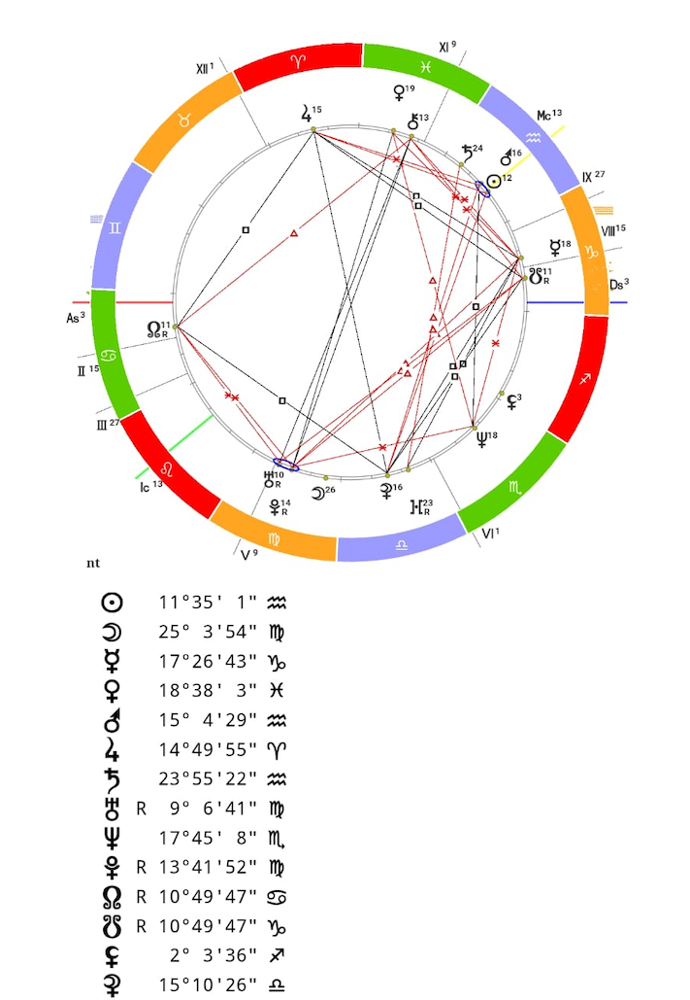

Шаг 5. Практика
Теория без практики мертва. Освоив планеты, знаки, дома и аспекты, начинайте тренироваться «на кошечках» — на друзьях, коллегах и родственниках.
Где рассчитывать карты
Считать вручную ничего не нужно: карты бесплатно рассчитываются онлайн. Рекомендуемая программа — Sotis-Online: профессиональный инструмент, работает в браузере и на телефоне, строит натальные карты, транзиты, синастрии.
Для расчёта понадобятся дата, точное время и место рождения.
Пример натальной карты

Что видно на этом примере и как его читать:
- Солнце ☉ на 11° Водолея — сердцевина личности: независимость, оригинальность, устремлённость в будущее.
- Луна ☽ на 25° Девы — эмоциональная природа: практичная забота, внимание к деталям и здоровью.
- Марс ♂ и Сатурн ♄ тоже в Водолее, рядом с Солнцем — большая концентрация энергии в одном знаке (стеллиум).
- Асцендент (As) в Раке — то, как человек выглядит и ведёт себя при первом контакте.
- Значок R у планеты означает ретроградное движение — его энергия развёрнута «внутрь», проявляется с задержкой или нестандартно.
План тренировки
Постройте свою карту
Начните с себя: вы лучше всех знаете «клиента» и сразу увидите, что попадает, а что нет.Разберите карты близких
Друзья, коллеги, родственники — 10–20 карт людей, которых вы хорошо знаете. Сверяйте прочитанное с реальной жизнью.Идите от общего к частному
Сначала стихии и полусферы (где скопление планет), потом сильнейшие планеты и угловые точки, потом дома и аспекты. Не тоните в деталях.Ведите записи
Заведите тетрадь разборов: гипотеза → проверка → вывод. Через 20–30 карт вы увидите собственные рабочие приёмы.
Курсы: нужны ли?
Вся информация есть в открытом доступе, и описанного плана достаточно для самостоятельного старта. Если хочется системности и обратной связи — можно пойти на курсы. Хороший пример — Санкт-Петербургская Академия астрологии Константина Дарагана: в целом полезно, но не обязательно.
Главное правило практики: астрология — инструмент понимания, а не приговор. Любую конфигурацию человек может прожить на разном уровне — карта показывает потенциал и задачи, а не судьбу, высеченную в камне.
Дополните теорию живыми объяснениями — аудио-лекции →